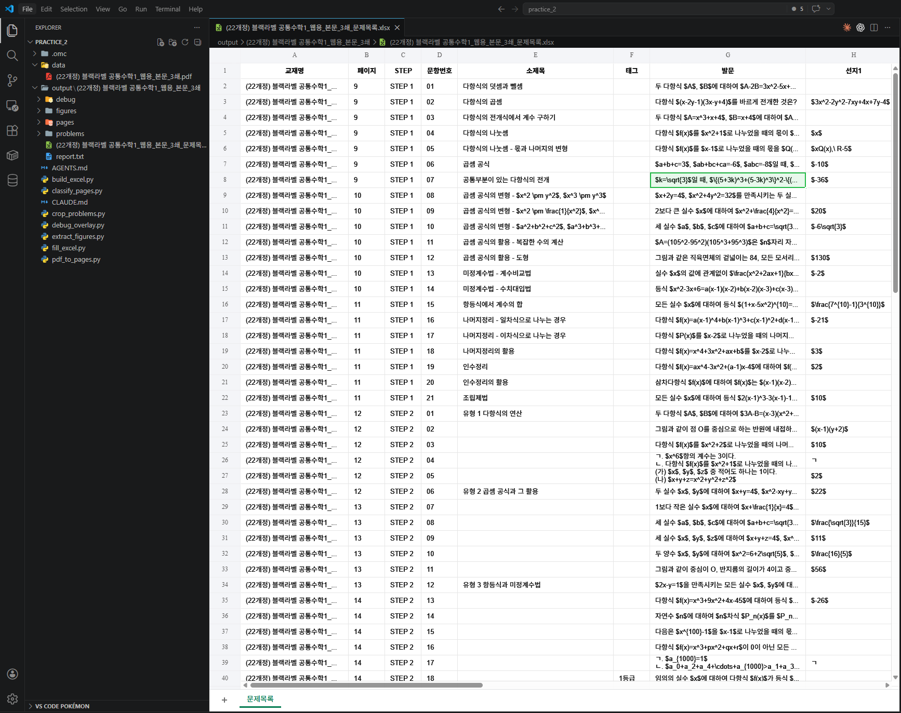

Stage 3. 사람 확인 및 엑셀 정리¶
← 이전: Stage 2. 문제를 찾아서 한 장씩 잘라내기 | 다음 → Stage 4. Skill화
여기까지 오면 문제별 이미지가 깔끔하게 잘려 있습니다. 이제 AI한테 이 이미지를 보여주고 텍스트로 읽어달라고 한 다음, 메타데이터와 함께 엑셀로 정리하면 끝입니다.
이 단계의 목적
- 잘라낸 문제 이미지를 AI가 직접 보고 텍스트로 변환합니다
- STEP, 문항번호, 소제목, 태그, 발문, 선지를 엑셀에 정리합니다
- 수식은 LaTeX 형식으로 변환합니다
3-1. 엑셀 틀 만들기¶
AI에게 이렇게 말해보세요 — 엑셀 틀 만들기
이제 최종 결과물인 **엑셀 파일을 만들** 거야.
먼저 엑셀의 틀을 만들어줘. 한 행이 문제 하나에 대응되고, 열은 이렇게 구성해줘:
| 열 이름 | 설명 |
|---------|------|
| 교재명 | 책 이름 |
| 페이지 | 몇 쪽인지 |
| STEP | STEP 1, 2, 3 중 하나 |
| 문항번호 | 01, 02, ... |
| 소제목 | 문제 옆에 적힌 카테고리명 (없으면 빈 칸) |
| 태그 | 빈출, 서술형, 1등급 같은 표시 (없으면 빈 칸) |
| 발문 | 문제 본문 텍스트 |
| 선지1~선지5 | 객관식이면 5개 선지, 서술형이면 빈 칸 |
| 그림유무 | O 또는 X |
| 도형이미지경로 | figures/ 폴더의 파일 경로 (없으면 빈 칸) |
| 문제이미지경로 | problems/ 폴더의 파일 경로 |
이미 단계 2~3에서 잡아둔 정보(페이지, STEP, 문항번호, 소제목, 태그, 좌우 컨럼)가 있으니까, 그걸 먼저 엑셀에 채워줘. **발문이랑 선지는 아직 비워둘** — 다음에 채울 거야.
파일 경로: `output/책이름/책이름_export.xlsx`
3-2. 문제 이미지를 텍스트로 변환하기¶
AI에게 이렇게 말해보세요 — 문제 이미지를 텍스트로 변환
이제 엑셀에서 비어 있는 "발문"과 "선지" 칸을 채울 거야.
`output/책이름/problems/` 폴더에 있는 문제 이미지들을 **네가 직접 하나씩 봐줘.** 각 이미지를 보고 아래 정보를 읽어서 엑셀에 채워줘:
1. **발문**: 문제 본문을 텍스트로 옮겨줘. 수식은 LaTeX 형식($...$)으로 써줘.
2. **선지**: 객관식이면 ①~⑤ 선지를 각각 선지1~선지5 칸에 넣어줘. 서술형이면 빈 칸으로 둘.
**중요한 규칙:**
- 수식은 반드시 LaTeX로 써줘. 예: `$x^2 + 3x - 5 = 0$`
- 한국어 텍스트는 그대로 옮겨줘
- 이미지에서 읽기 어려운 부분이 있으면 `[불명확]`이라고 표시해줘
- 한 문제 끝날 때마다 엑셀을 저장해줘 (중간에 멈춰도 날아가지 않게)
문제가 많으니까 10개씩 끊어서 처리하고, 10개 끝날 때마다 진행 상황을 알려줘.
전부 끝나면 엑셀 파일을 저장하고, **총 몇 문제를 처리했는지, 불명확 표시가 몇 개인지** 알려줘.
사람 확인은 필수입니다
AI가 패턴은 잘 찾지만, 의미가 미묘하게 다른 값이나 실제 업무상 중요한 차이는 사람이 더 잘 잡습니다. 엑셀을 열고 문제 이미지와 나란히 비교해보세요.
효율적인 사람 확인 프로토콜
1단계: 처음 5문제 전수 확인 (5분)
- 문제 이미지와 엑셀의 발문을 나란히 비교
- 수식이 LaTeX로 제대로 변환됐는지 확인
- STEP과 문항번호가 맞는지 확인
2단계: 도형 있는 문제 3건 확인 (3분)
- 그림유무가 "O"인 행만 필터링
- 도형이미지경로의 파일을 열어서 실제 도형과 비교
- 도형이 잘렸거나 빠진 건 없는지 확인
3단계: [불명확] 표시 전수 확인 (2분)
- AI가
[불명확]이라고 표시한 곳을 검색 - 원본 이미지를 보고 직접 입력하거나 재요청
4단계: 마지막 5문제 확인 (2분)
- 뒷부분에서 정확도가 떨어지는 경우가 많습니다
- 마지막 5문제를 이미지와 대조
이상하면?
- "8번 문제 발문이 비어있어"
- "수식이 LaTeX가 아니라 깨진 글자로 돼 있어"
- "선지 순서가 뒤바뀐 것 같아 — 원본 이미지랑 비교해볼게"
- "STEP 정보가 틀린 행이 있어"

체크포인트¶
-
output/책이름/책이름_export.xlsx파일이 생겼습니다 - 엑셀을 열면 문제 하나당 한 행으로 정리돼 있습니다
- STEP, 문항번호, 페이지 정보가 맞습니다
- 발문 칸에 문제 텍스트가 채워져 있습니다 (수식은 LaTeX 형태)
- 도형이 있는 문제는 그림유무가 "O"이고 도형이미지경로에 파일 경로가 있습니다
다음 단계에서는 지금까지의 과정을 Skill로 만들어 재사용 가능하게 포장합니다.
← 이전: Stage 2. 문제를 찾아서 한 장씩 잘라내기 | 다음 → Stage 4. Skill화